Désinformation, au-delà de la Fake NewsDisinformation, Beyond Fake News
Rappel : qu’est-ce qu’une Fake News ?Reminder: what is fake news?
▸ Fake News : information fausse.▸ Fake news: false information.
▸ Information contraire au réel et aux connaissances que nous en avons.▸ Information that contradicts reality and what we know about it.
▸ Généralement diffusée sur les médias et les réseaux sociaux.▸ Usually spread through the media and social networks.
▸ Généralement dans le but de désinformer.▸ Usually with the aim of misleading.
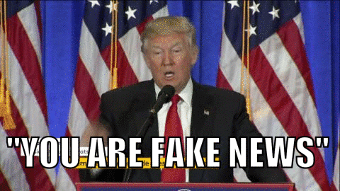
1) Quelles sont les questions à se poser ?1) What questions should we ask?
Quels sont les critères pour valider l'information ?What criteria help us validate information?
- Fiabilité de la source.Reliability of the source.
- Fiabilité de l'interlocuteur.Reliability of the speaker.
- Niveau de preuves.Level of evidence.
- Beaucoup de sources en parlent.Many sources report it.
- Crédibilité de l'information.Credibility of the information.
- Commentaires et critiques de l'information.Comments and criticism of the information.
Fiabilité de la sourceReliability of the source
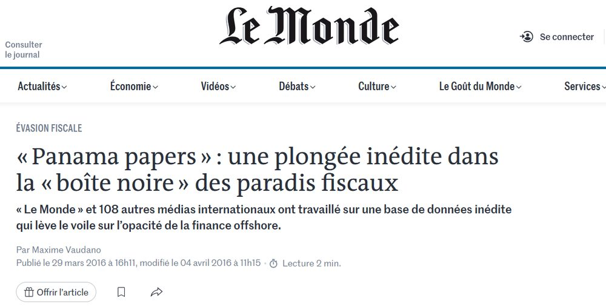
Fiabilité de la sourceReliability of the source
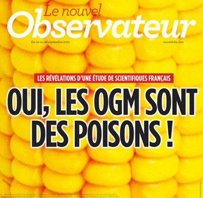
Fiabilité de l’interlocuteur.Reliability of the speaker.
Fiabilité de l’interlocuteur.Reliability of the speaker.
Niveau de preuvesLevel of evidence
Les preuves peuvent être fausses, falsifiées, ou faire aboutir à la mauvaise conclusion.Evidence can be false, falsified, or lead to the wrong conclusion.
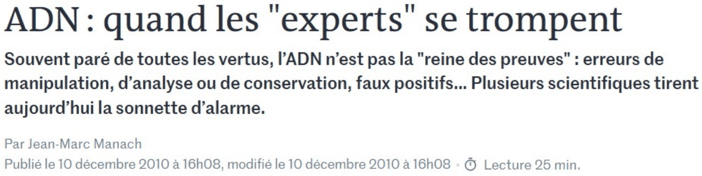
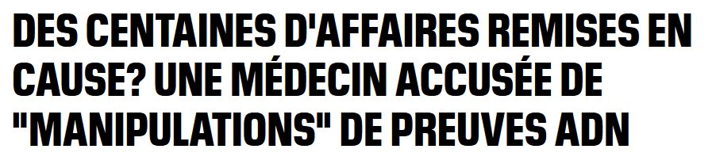
Beaucoup de sources en parlent.Many sources report it.
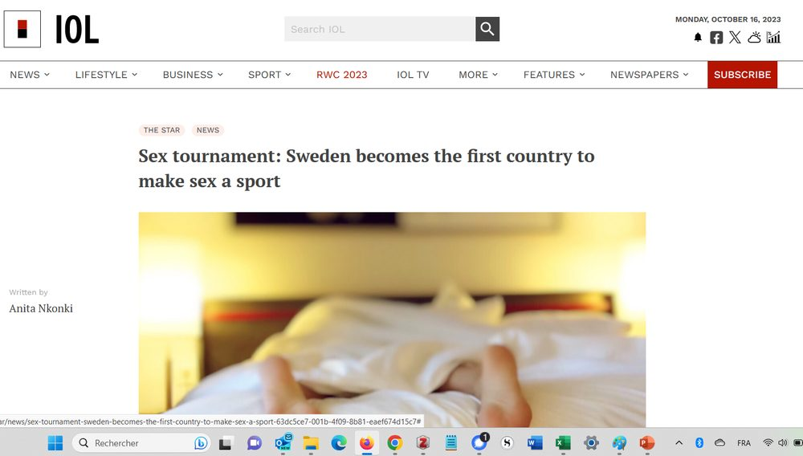
Beaucoup de sources en parlent.Many sources report it.
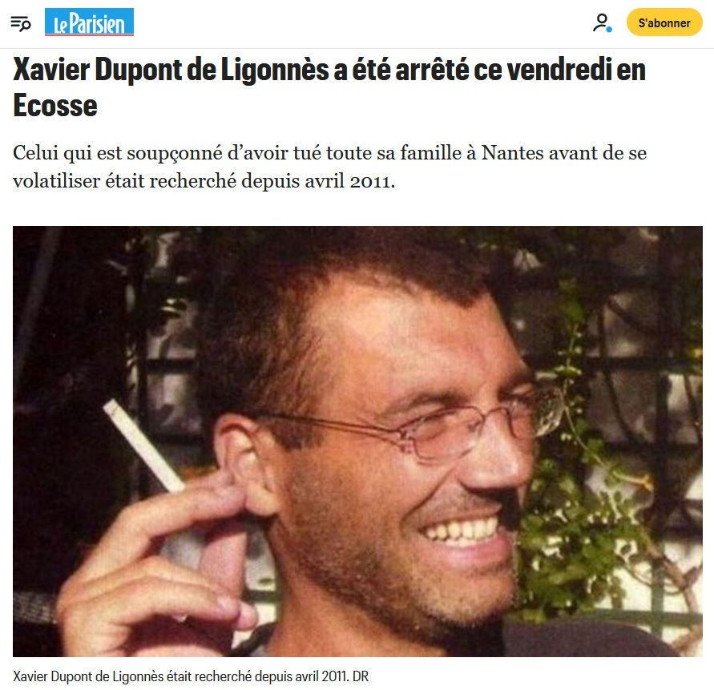
Crédibilité de l’informationCredibility of the information
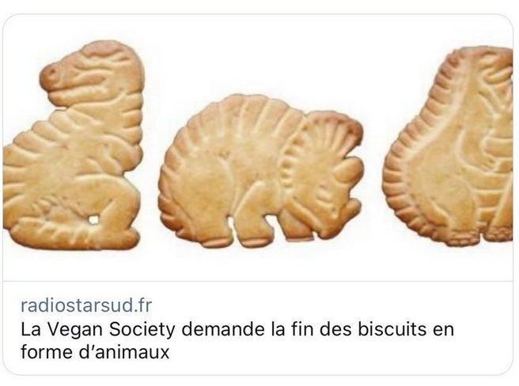
Crédibilité de l’informationCredibility of the information
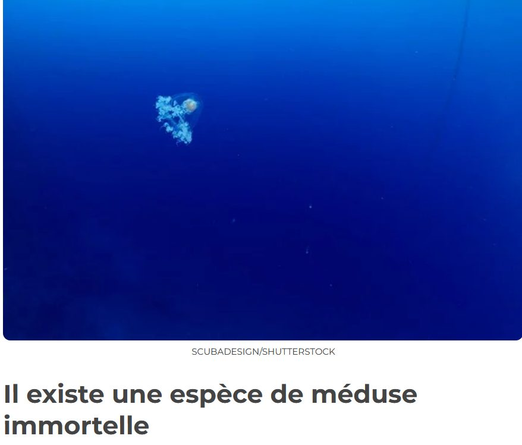
Quels sont les retours critiques ?What is the critical feedback?
Quels sont les retours critiques ?What is the critical feedback?
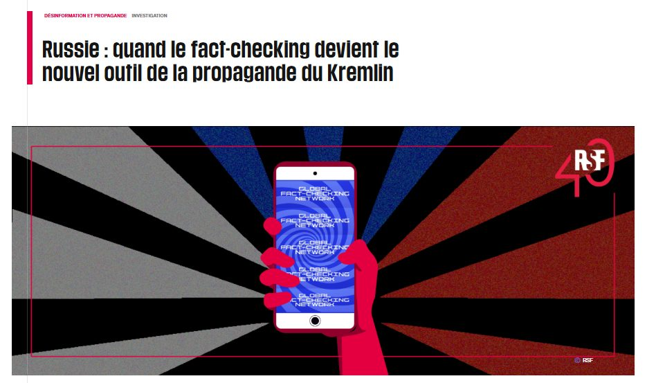
CritèresCriteria
– Fiabilité de la source.– Reliability of the source.
– Fiabilité de l’interlocuteur.– Reliability of the speaker.
– Niveau de preuves– Level of evidence
– Multiplicité des canaux de diffusion.– Multiple distribution channels.
– Crédibilité de l’information.– Credibility of the information.
– Commentaires et critiques de l’information.– Comments and criticism of the information.
Limite du conceptA limit of the concept
▸ Inclut les canulars (Gorafi)▸ Includes hoaxes (Le Gorafi)
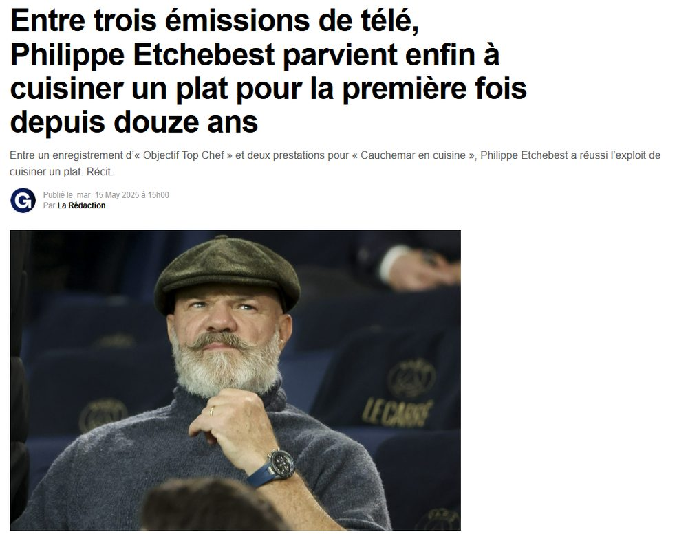
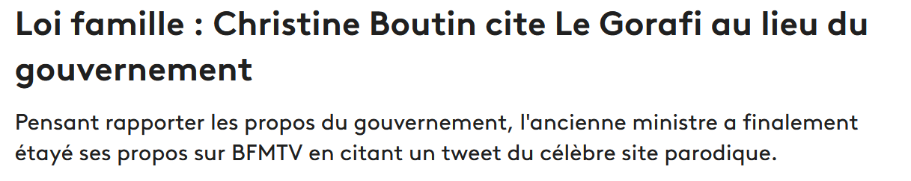
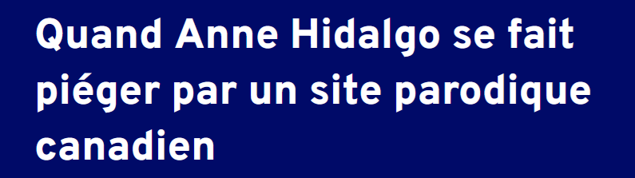
Différentes Fake NewsDifferent kinds of fake news
▸ Mésinformation▸ Misinformation
▹ Une infox que l’on partage mais que l’on croit vraie.▹ Fake news we share while believing it is true.
▸ Désinformation▸ Disinformation
▹ Une infox que l’on partage et que l’on sait fausse.▹ Fake news we share while knowing it is false.
Informations fallacieuses (misleading news)Misleading information (misleading news)
▸ Sont beaucoup moins facilement identifiables qu’une “Fake News” pure et dure.▸ Are much harder to identify than outright “fake news”.
▸ Sont beaucoup plus partagées par les médias.▸ Are shared far more widely by the media.
Limite du conceptA limit of the concept
▸ Inclut les canulars (Gorafi)▸ Includes hoaxes (Le Gorafi)
▸ Distinction floue entre la Fake news volontaire (désinformation) et involontaire (mésinformation).▸ A blurred line between deliberate fake news (disinformation) and unintentional fake news (misinformation).
▸ Néglige tout le continuum possible de désinformation (« misleading news »).▸ Ignores the whole possible continuum of disinformation (“misleading news”).
ContinuumContinuum
ConclusionConclusion
▸ 1) Aucune source n’est à 100% fiable▸ 1) No source is 100% reliable
▸ 2) La « Fake News » est un concept flou.▸ 2) “Fake news” is a blurry concept.
▸ 3) Elle dépend du contexte.▸ 3) It depends on the context.
Désinformer SANS Fake NewsMisleading WITHOUT fake news
Le biais de cadrageFraming bias
"Dans le métro, ce migrant refuse que des blancs rentrent dans le même wagon que lui !! C’est bizarre, on nous a toujours dit que le racisme anti-blancs n’existait pas !""On the subway, this migrant refuses to let white people into the same carriage as him!! Weird, we were always told anti-white racism didn’t exist!"
À Lille, un homme frappait sa femme dans le métro. Un passager, témoin de la scène, lui a demandé à plusieurs reprises de cesser. À l’arrêt suivant, le passager a pris l’initiative de faire sortir l’homme du train pour protéger la femme.In Lille, a man was hitting his wife on the subway. A passenger who witnessed the scene repeatedly asked him to stop. At the next stop, the passenger took it upon himself to get the man off the train to protect the woman.
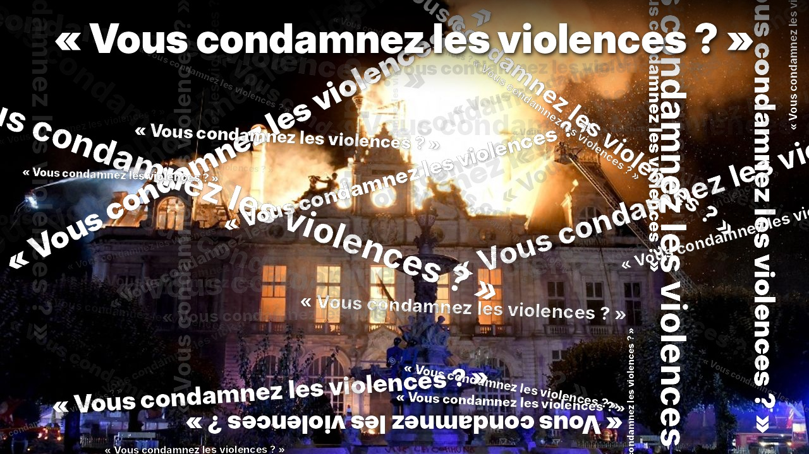
« Dégradations » ≠ « Médiatisation des dégradations »“Damage” ≠ “Media coverage of damage”
Le même chiffre, retournéThe same figure, flipped
Un tweet, deux versions du même sondageOne tweet, two versions of the same poll
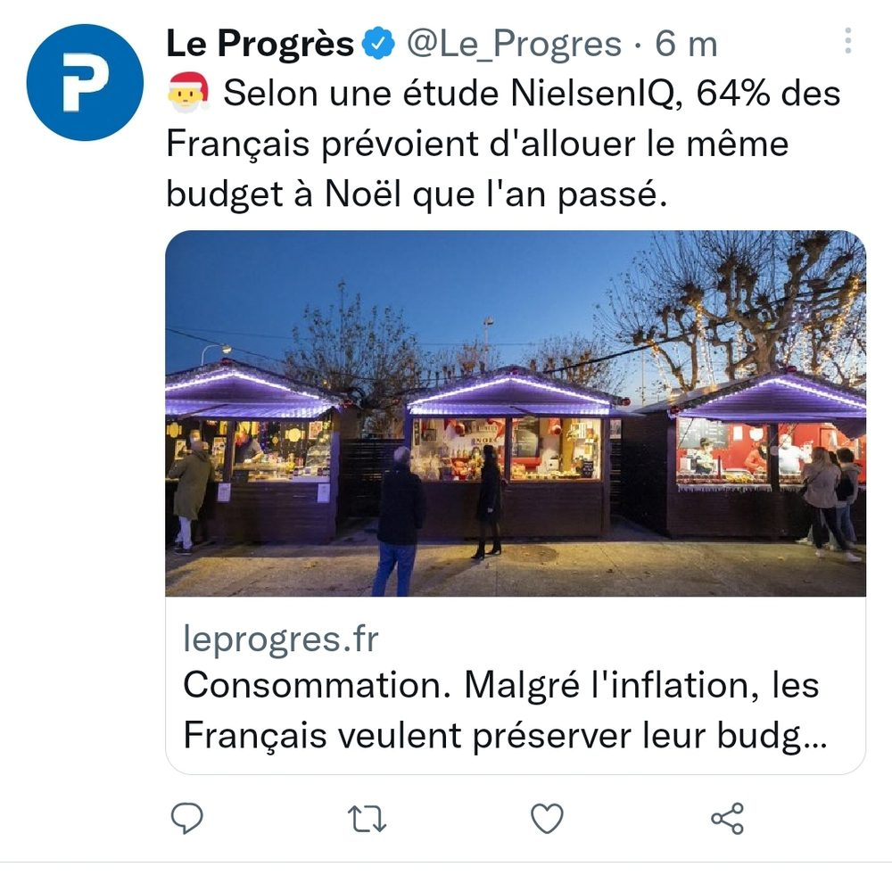
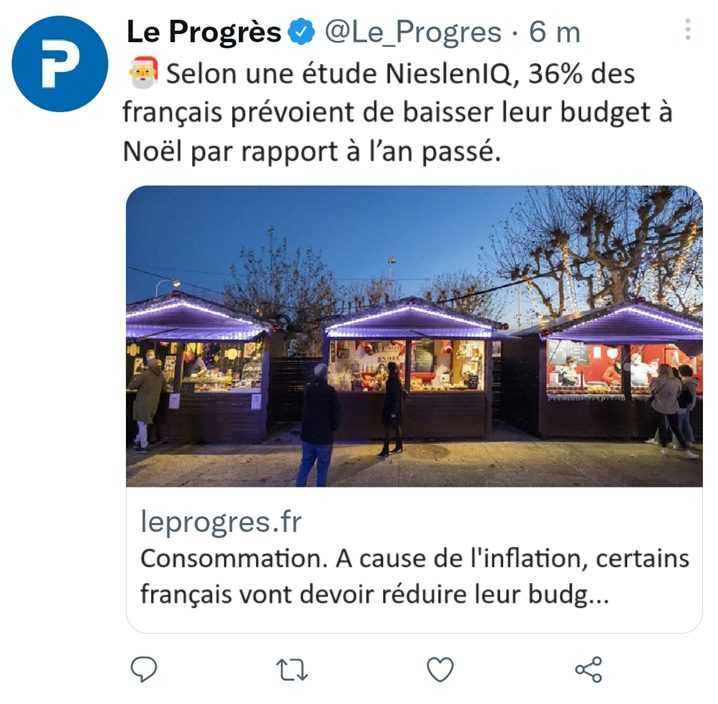
Il est possible de désinformer SANS fake news mais en CITANT des Fake News.It is possible to mislead WITHOUT fake news, but by CITING fake news.
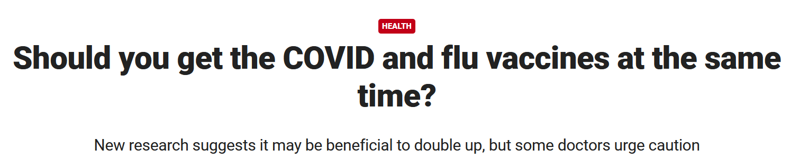
« Devriez-vous recevoir les vaccins contre la COVID et la grippe en même temps ? »
De nouvelles recherches suggèrent qu’il pourrait être bénéfique de les faire ensemble, mais certains médecins appellent à la prudence.“Should you get the COVID and flu vaccines at the same time?”
New research suggests it may be beneficial to double up, but some doctors urge caution.
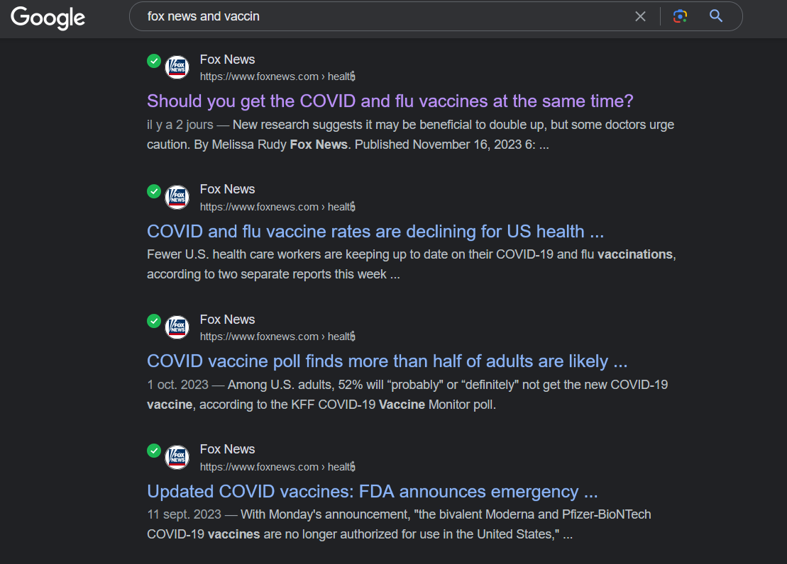
Fox News
https://www.foxnews.com › health
Devriez-vous recevoir les vaccins contre la COVID et la grippe en même temps ?
Il y a 2 jours – De nouvelles recherches suggèrent qu’il pourrait être bénéfique de les faire ensemble, mais certains médecins appellent à la prudence. Par Melissa Rudy, Fox News. Publié le 16 novembre 2023 à 6h : ...
Fox News
https://www.foxnews.com › health
Les taux de vaccination contre la COVID et la grippe diminuent chez les professionnels de santé américains ...
De moins en moins de travailleurs de la santé aux États-Unis se tiennent à jour concernant leurs vaccinations contre la COVID-19 et la grippe, selon deux rapports distincts publiés cette semaine ...
Fox News
https://www.foxnews.com › health
Un sondage sur le vaccin contre la COVID révèle que plus de la moitié des adultes sont susceptibles de ne pas se faire vacciner ...
1er oct. 2023 – Parmi les adultes américains, 52 % déclarent qu’ils ne se feront « probablement » ou « certainement » pas administrer le nouveau vaccin contre la COVID-19, selon le sondage KFF COVID-19 Vaccine Monitor.
Fox News
https://www.foxnews.com › health
Vaccins contre la COVID mis à jour : la FDA annonce une autorisation d’urgence ...
11 sept. 2023 – Selon l’annonce de lundi, « les vaccins bivalents Moderna et Pfizer-BioNTech contre la COVID-19 ne sont plus autorisés pour une utilisation aux États-Unis, » ...Fox News
https://www.foxnews.com › health
Should you get the COVID and flu vaccines at the same time?
2 days ago – New research suggests it may be beneficial to double up, but some doctors urge caution. By Melissa Rudy, Fox News. Published November 16, 2023 6am: ...
Fox News
https://www.foxnews.com › health
COVID and flu vaccine rates are declining for US health care workers ...
Fewer U.S. health care workers are keeping up to date on their COVID-19 and flu vaccinations, according to two separate reports this week ...
Fox News
https://www.foxnews.com › health
COVID vaccine poll finds more than half of adults are likely ...
Oct 1, 2023 – Among U.S. adults, 52% said they will “probably” or “definitely” not get the new COVID-19 vaccine, according to the KFF COVID-19 Vaccine Monitor poll.
Fox News
https://www.foxnews.com › health
Updated COVID vaccines: FDA announces emergency ...
Sep 11, 2023 – With Monday’s announcement, “the bivalent Moderna and Pfizer-BioNTech COVID-19 vaccines are no longer authorized for use in the United States,” ...
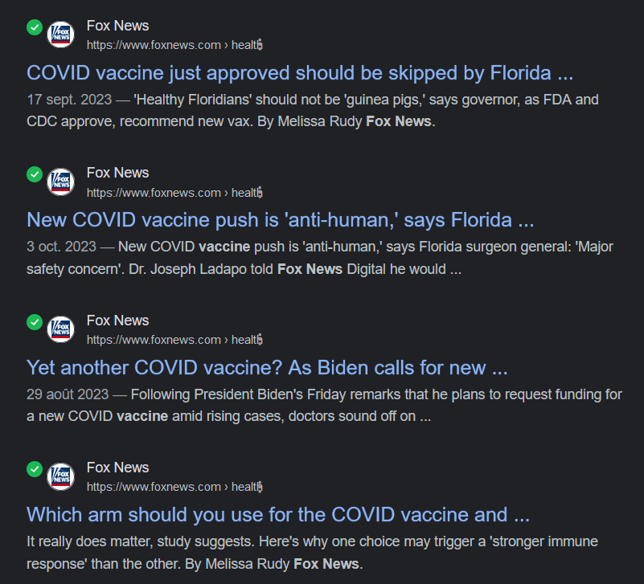
Fox News
https://www.foxnews.com › health
Le vaccin COVID qui vient d’être approuvé devrait être évité par les Floridiens…
17 sept. 2023 – Les « Floridiens en bonne santé » ne devraient pas être des « cobayes », déclare le gouverneur, alors que la FDA et le CDC approuvent et recommandent un nouveau vaccin.
Par Melissa Rudy, Fox News.
Fox News
https://www.foxnews.com › health
La nouvelle promotion du vaccin COVID est « anti-humaine », déclare le chirurgien général de Floride…
3 oct. 2023 – La nouvelle promotion du vaccin COVID est « anti-humaine », affirme le chirurgien général de Floride : « Problème majeur de sécurité ».
Le Dr Joseph Ladapo a déclaré à Fox News Digital qu’il…
Fox News
https://www.foxnews.com › health
Encore un autre vaccin COVID ? Alors que Biden réclame un nouveau…
29 août 2023 – À la suite des déclarations du président Biden vendredi indiquant qu’il prévoit de demander un financement pour un nouveau vaccin COVID amid rising cases, des médecins réagissent…
Fox News
https://www.foxnews.com › health
Quel bras devriez-vous utiliser pour le vaccin COVID et…
Cela compte vraiment, suggère une étude. Voici pourquoi un choix pourrait déclencher une « réponse immunitaire plus forte » que l’autre.
Par Melissa Rudy, Fox News.Fox News
https://www.foxnews.com › health
COVID vaccine just approved should be skipped by Florida…
Sep 17, 2023 – “Healthy Floridians” should not be “guinea pigs,” says governor, as FDA and CDC approve, recommend new vaccine.
By Melissa Rudy, Fox News.
Fox News
https://www.foxnews.com › health
New COVID vaccine push is “anti-human,” says Florida…
Oct 3, 2023 – New COVID vaccine push is “anti-human,” says Florida surgeon general: “Major safety concern”.
Dr. Joseph Ladapo told Fox News Digital he…
Fox News
https://www.foxnews.com › health
Yet another COVID vaccine? As Biden calls for new…
Aug 29, 2023 – Following President Biden’s Friday remarks that he plans to request funding for a new COVID vaccine amid rising cases, doctors sound off…
Fox News
https://www.foxnews.com › health
Which arm should you use for the COVID vaccine and…
It really does matter, study suggests. Here’s why one choice may trigger a “stronger immune response” than the other.
By Melissa Rudy, Fox News.
Les autres manières de désinformerOther ways to mislead
3 - Les autres manières de désinformer3 - Other ways to mislead
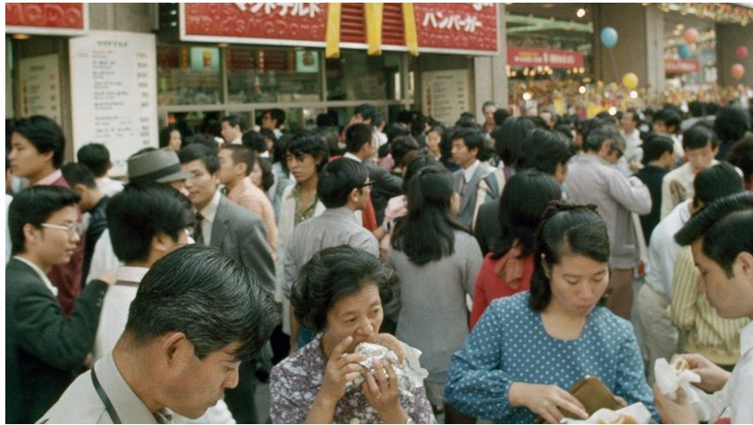
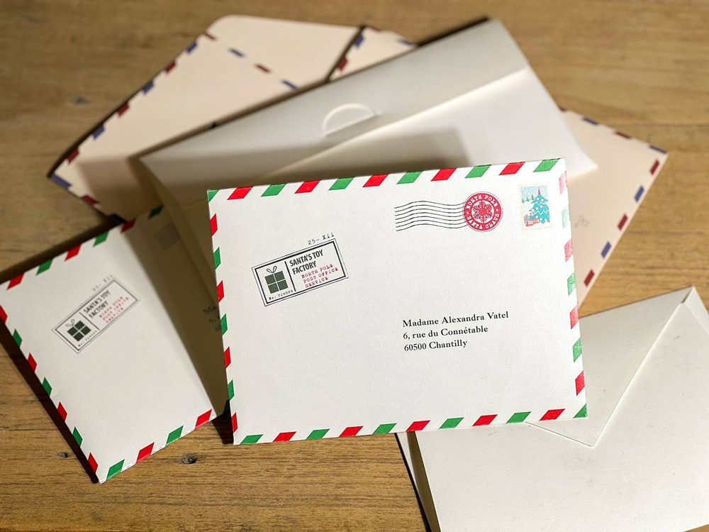
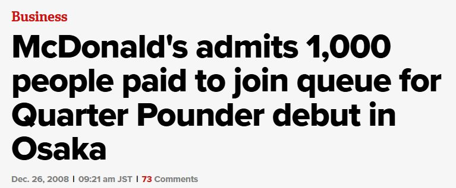
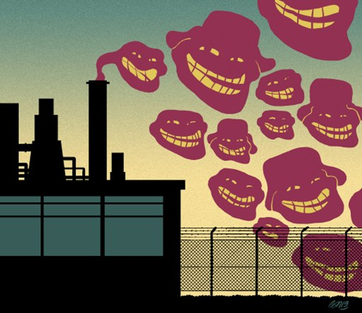
L’AstroturfingAstroturfing
▸ L’astroturfing est une technique consistant à simuler un mouvement spontané ou populaire à des fins politiques ou économiques dans le but d’influencer l’opinion publique.▸ Astroturfing is a technique that fakes a spontaneous or grassroots movement for political or economic ends, in order to influence public opinion.
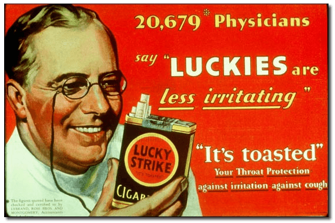
La fabrique du douteThe manufacture of doubt
Une technique à l’origine employée par les industriels pour noyer le poisson sur leurs activités mais pas seulement… Elle plaît beaucoup en politique également.A technique originally used by industry to muddy the waters about its activities, but not only… It is also very popular in politics.
La fabrique du douteThe manufacture of doubt
La Mute NewsMute News
Ne PAS parler de certaines informations, ou PEU parler de certaines informations.NOT talking about certain information, or talking about it only a LITTLE.
La Mute NewsMute News
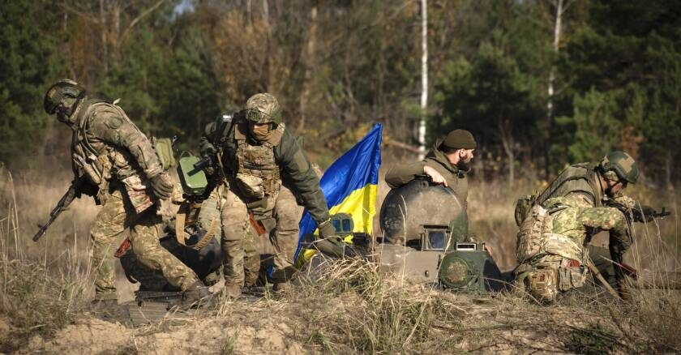
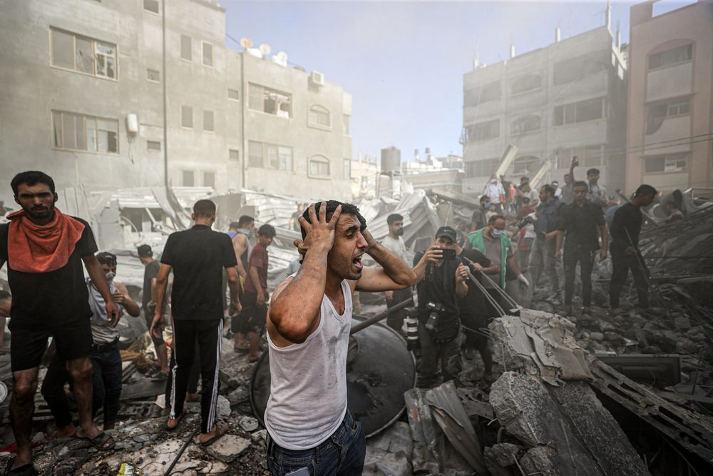
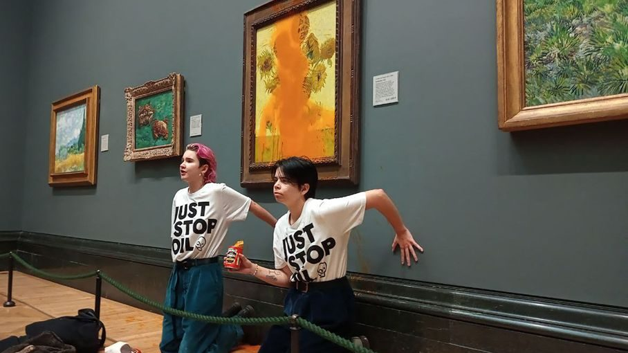
L’usage politique de la désinformationThe political use of disinformation
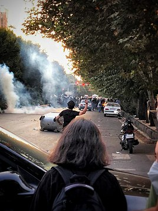
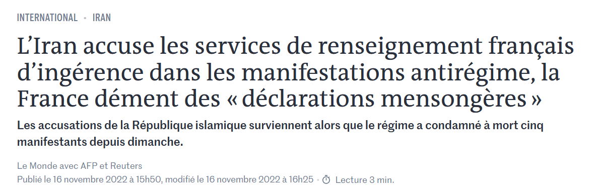
Les croix de DavidThe Stars of David
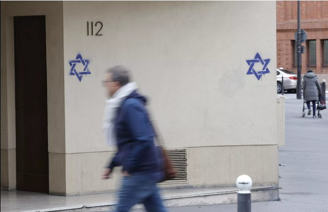
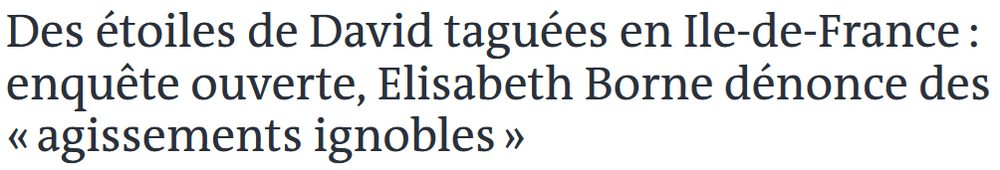
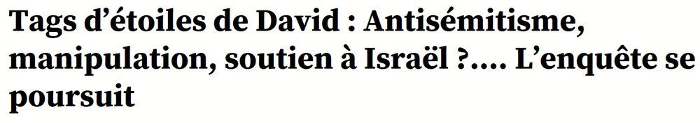
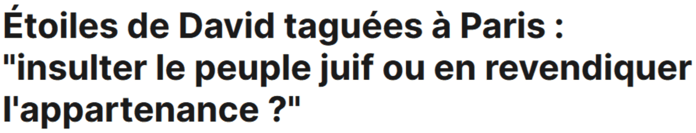
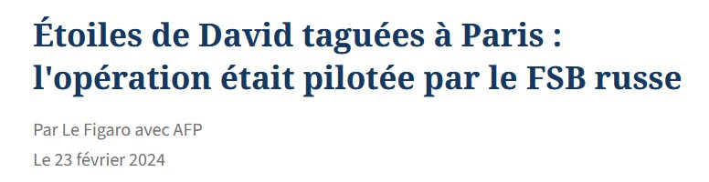
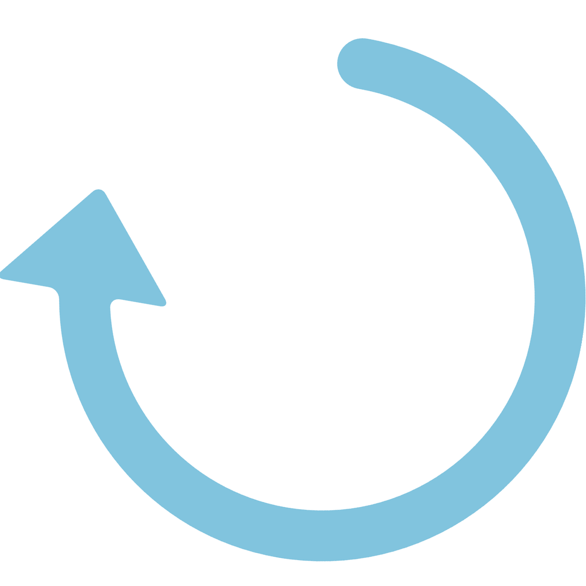
Complot ou pas ?Conspiracy or not?
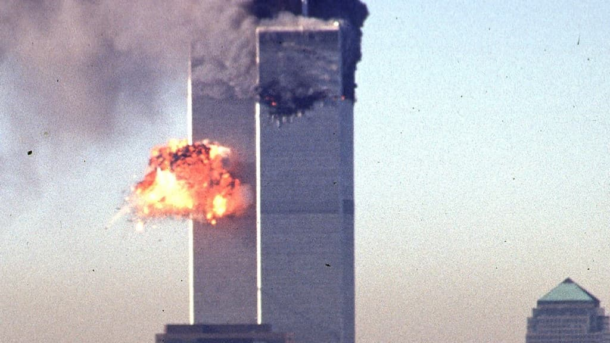
Les théories du complot comme argument rhétoriqueConspiracy theories as a rhetorical device
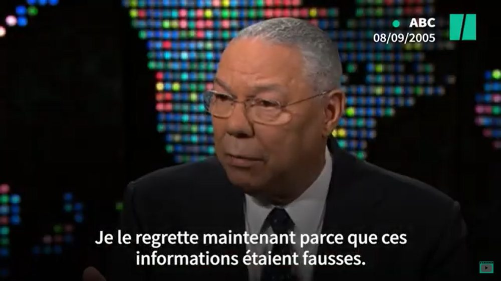
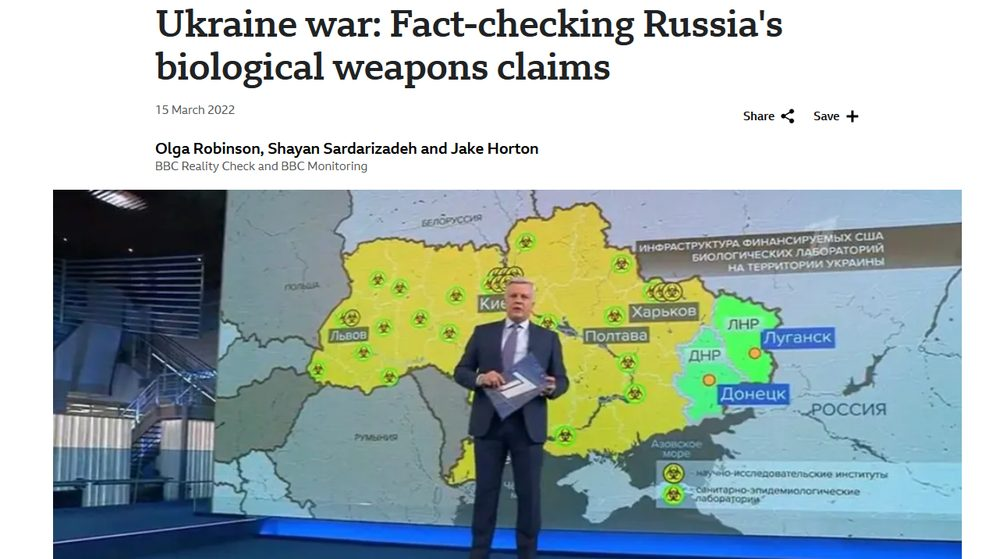
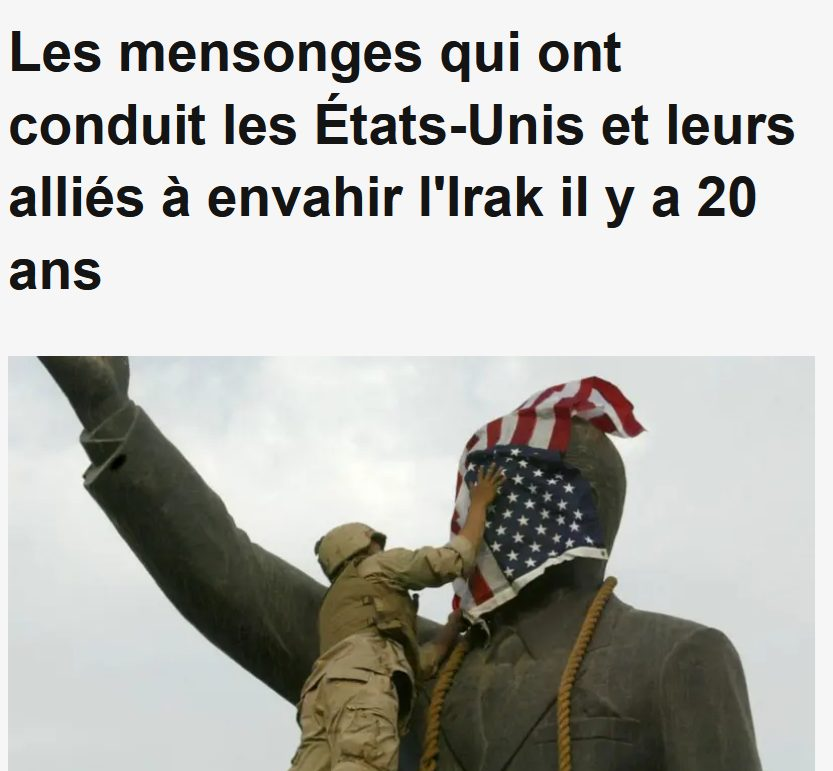
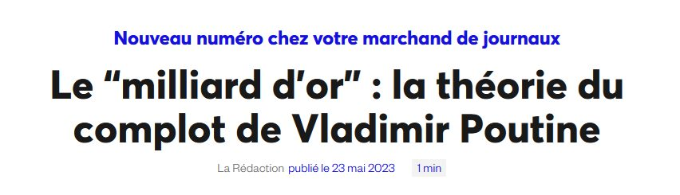
▸ Théorie du complot d’origine Russe de 1990 qui imagine que les occidentaux souhaitent accaparer l’ensemble de la richesse du globe pour uniquement un milliard d’individus.▸ A Russian conspiracy theory from 1990 imagining that Westerners want to hoard all of the world’s wealth for just one billion people.
▸ Comme souvent, il y a un fond de vrai (si le monde entier vivait comme les occidentaux, il n’y aurait plus assez de ressources).▸ As is often the case, there is a grain of truth (if the whole world lived like Westerners, there would not be enough resources).
▸ MAIS cela est extrapolé jusqu’à imaginer une agentivité consciente des occidentaux pour s’accaparer l’ensemble des richesses du globe VOIRE veulent réduire en esclavage ou tuer le reste de la population.▸ BUT this is stretched to the point of imagining a conscious intent by Westerners to seize all of the world’s wealth, or EVEN to enslave or kill the rest of the population.
Conséquence politique de cette théorie du complot :Political consequence of this conspiracy theory:
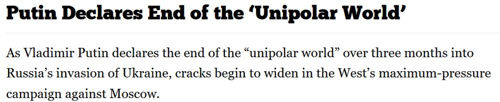
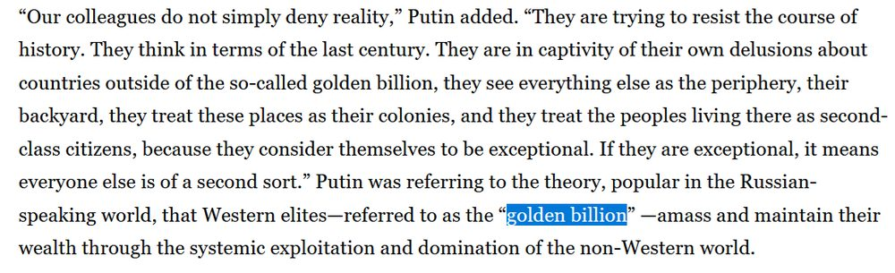
Conséquence de cette idéologie en AfriqueA consequence of this ideology in Africa
Autre exempleAnother example
L’impact de l’information, même vraieThe impact of information, even when true
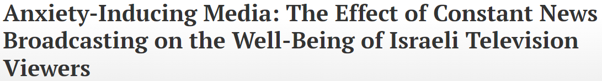
- L’exposition à des nouvelles angoissantes accroît le temps passé devant les informations.- Exposure to distressing news increases the time spent watching the news.
- Les personnes davantage exposées à ces nouvelles angoissantes montrent des symptômes d’anxiété plus importants.- People more exposed to this distressing news show greater anxiety symptoms.
Merci !Thank you!
Après la séanceAfter the session
Le bilan, les jeux, et votre retourSummary, games, and your feedback
Scannez ce QR code : vous pourrez donner votre retour, revoir le bilan de la formation ou rejouer aux jeux.Scan this QR code: you can leave your feedback, review the session summary, or play the games again.
![QR code vers la page antoninatger.github.io/interventions/retours]() antoninatger.github.io/interventions/retours →antoninatger.github.io/interventions/retours →
antoninatger.github.io/interventions/retours →antoninatger.github.io/interventions/retours →